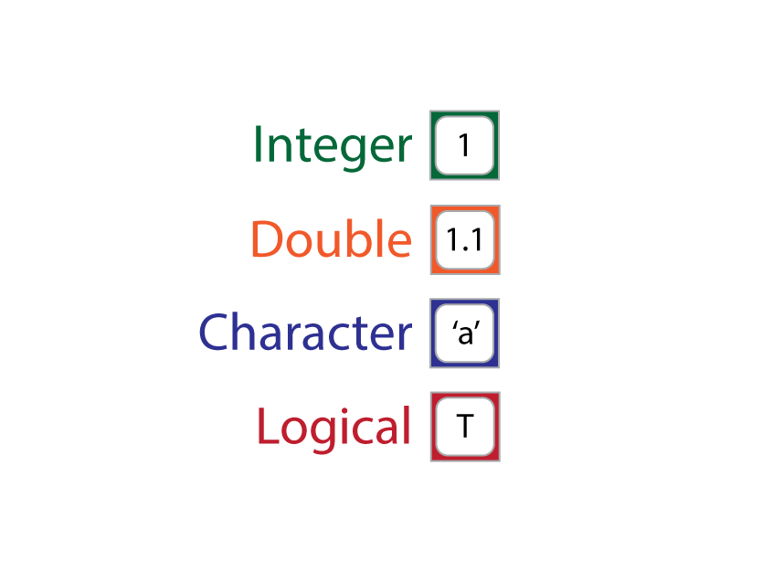
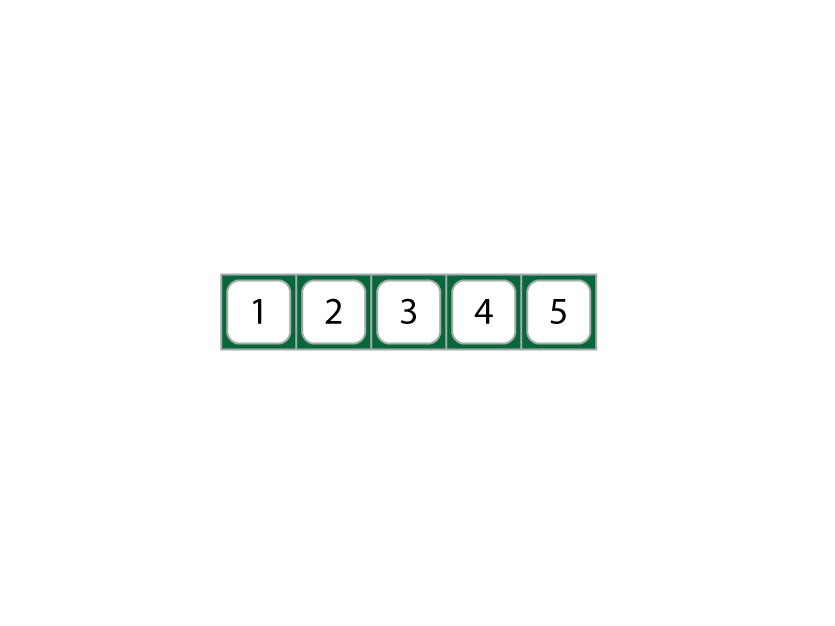
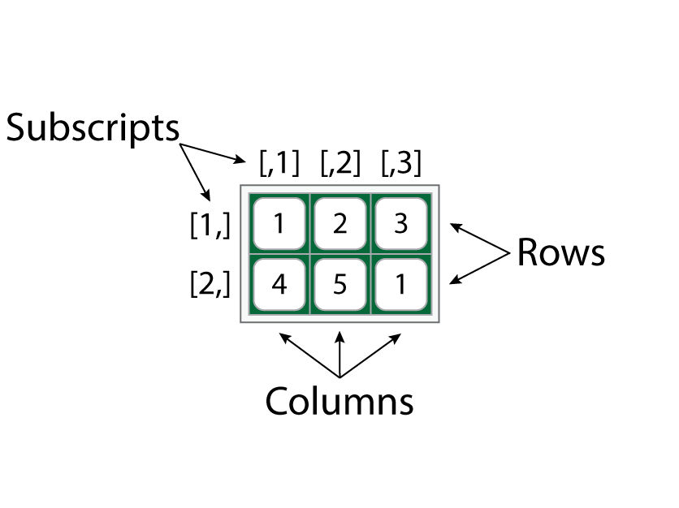
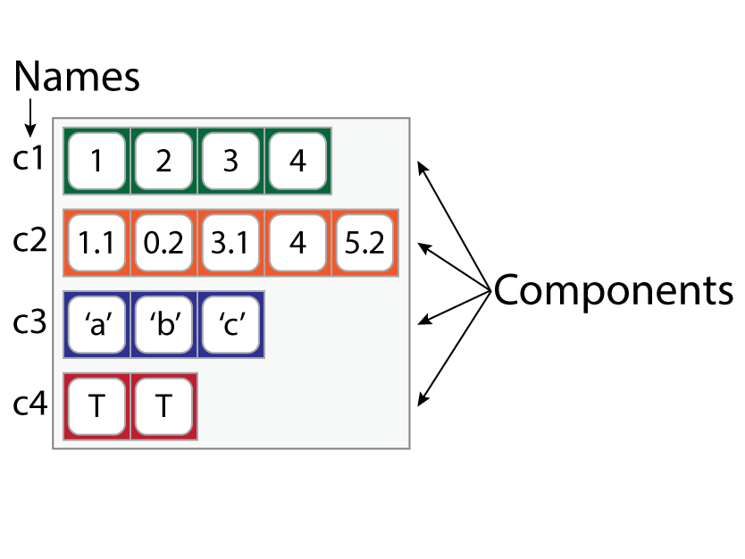
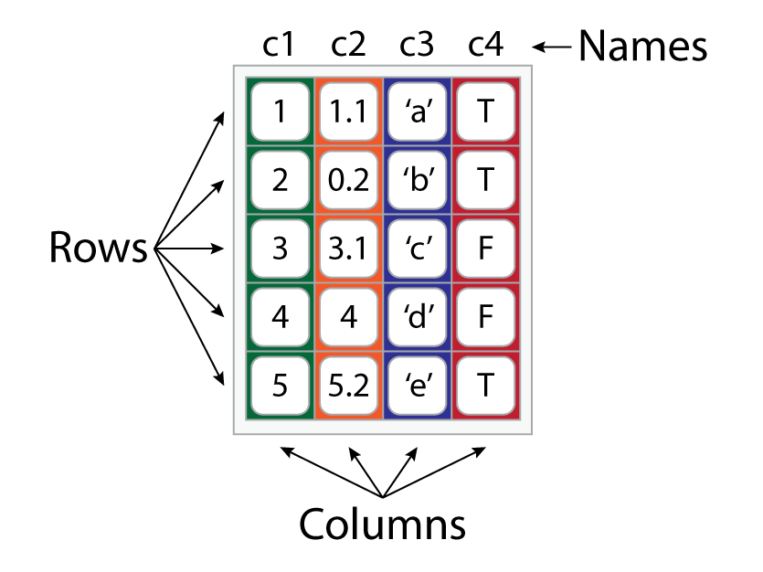

Chapter 8 Vector Types
8.1 Overview
| Goal | To familiarize students with primary data and vector types in R. |
| tl;dr | The beings of R are objects. |
| Outcomes |
Here, you will learn about
|
| Datasets | NONE |
| Requirements | Chapter 6: R Basics |
| Further Reading |
An Introduction to R (R Core Team 2020a) Advanced R (Wickham 2015) |
The word ‘vector’ is just fancy R-speak for an R object with a specific form or structure that contains one or more data types. The forms vectors can take include, among others, scalars and lists (see Fig. 8.1), and the data types they can hold include integer, double (i.e., fractions), logical, character, and factor (though factor is only an honorable mention). Putting effort into understanding these vector forms and data types might at first blush feel like a foolhardy pursuit of the inconsequential and esoteric, a task best relegated to crusty philosophers. But that is a mistake, for the different statistical questions you might want to ask will require data in one or the other form and type to answer. Understanding these forms and types will also help you manage your data better, thus making your statistical workflow more efficient and reproducible.
8.2 Data types
R defines a number of different data types, the four primary ones being: integer, double, logical, and character, with integer and double also collectively referred to as numeric. We will not discuss any of these in great detail here, pausing only to mention very briefly what each is (Meaning), what each is for (Use), how to make one (Create), and how to catch one in the wild (Identify). As an honorable mention, we will also include factors. These are not strictly their own data type (R actually encodes them as integers), but they are ubiquitous and utilized quite often in statistical analyses. So, we’ll treat them as a data type in their own right, on a level with the others, even if they aren’t, strictly speaking.
8.2.1 Integer
| Meaning: | A whole number or a number without a fractional component (like 1 as opposed to 1.3). |
| Use: | Counting things! It answers the question How many? |
| Example: |
How many students are in this class? (Hopefully, an integer.) How many Avengers are there now? |
| Create: |
By appending an L to a number.
|
| Identify: |
With is.integer().
|
8.2.2 Double
| Meaning: | A number with a fractional component (like 1.3 as opposed to 1). |
| Use: | Measuring things! It answers the question How much? |
| Example: |
How much coffee did I have this morning? How much did it rain last year in Pasquotank County, North Carolina? |
| Create: |
By typing a number (with or without a decimal, but no L)
|
| Identify: |
With is.double().
|
8.2.3 Character
| Meaning: | A string of symbols used to construct words in a natural language (by default, English letters). |
| Use: | Saying things! It can answer a bunch of questions. |
| Example: |
How much coffee did I have this morning? How much did it rain last year in Pasquotank County, North Carolina? |
| Create: |
By quoting it, i.e., surrounding a string with double " or single ' apostrophes.
|
| Identify: |
With is.character().
|
my_character <- 'quotidian'
my_character
## [1] "quotidian"
is.character(4.2)
## [1] FALSE
is.character(my_character)
## [1] TRUEA quick warning: if you do not surround the character with apostrophes, R will think you are trying to call an object with that name. If that object does not exist, R will protest.
Similarly, if you use quote marks around a named object, R treats it as a character string, rather than a call to the object.
8.2.4 Logical
| Meaning: | A truth condition, i.e., TRUE or FALSE. Also known as a boolean. |
| Use: | Implying things! Specifically, making conditional or hypothetical claims. |
| Example: |
If it rains today, I will take my umbrella. If x is an integer, please add one to it. |
| Create: |
By typing TRUE, FALSE, T, or F.
|
| Identify: |
With is.logical().
|
my_logical <- TRUE
my_logical
## [1] TRUE
is.logical(my_double)
## [1] FALSE
is.logical(my_logical)
## [1] TRUEYou can also create logicals in R using statements that R can evaluate for their truth or falsity. For example,
# is 2 greater than 5?
2 > 5
## [1] FALSE
# is 7 greater than or equal to itself?
7 >= 7
## [1] TRUE
# is 'cat' the same string as 'hat'
'cat' == 'hat'
## [1] FALSEThe symbols >, >=, and == are called logical operators. We’ll talk more about them in the chapter on indexing vectors. For now, simply note that the truth conditions of statements formed with these operators can be assigned to names, as with any object in R.
Did you notice that our is.* functions all return a logical?
8.2.5 Factors
| Meaning: | Categories, typically represented in R as character strings with levels. |
| Use: | Categorizing things! |
| Example: |
Tom is a feline. Jerry is a mouse. |
| Create: |
Using the function factor()
|
| Identify: |
With is.factor().
|
my_factor <- factor("Australian")
my_factor
## [1] Australian
## Levels: Australian
is.factor("quotidian")
## [1] FALSE
is.factor(my_factor)
## [1] TRUENotice that unlike a simple character, a factor has “levels.” These levels are the categories of the factor variable. A good example is nationality. Nationality is a factor, with the specific levels or categories of that factor including, for instance, American, Australian, Chinese, and French.
8.3 Vector types
Vectors come in two general flavors: atomic and complex. These differ in one crucial respect. While atomic vectors are limited to one data type, complex vectors can contain many data types. As shown in Fig. 8.1, atomic vectors include scalars, vectors, and matrices. Complex vectors include lists and data.frames.
Figure 8.1: Vector Types.
8.3.1 Scalar
A scalar-vector is an atomic vector that contains only one element. Hence, by definition, it can include only one data type. Here, we represent this with a square, which includes a value and is color-coded by its data type.

Note that all the examples we have used so far have been scalar vectors. You can check this using the length() function.
8.3.2 Vector
A vector-vector is an atomic vector that contains multiple elements. These multi-scalar atomic vectors do not really have a name like “list” or “scalar,” but in common R parlance the word ‘vector’ is often used as a synonym, which is a tad confusing, like “Are you going to New York (the state) or New York (the city)?” In what follows, we’ll just cross our fingers and hope the context is sufficient to tell the difference.

The standard way to create one of these is to use the concatenate function on scalars c().
Of course, you can have a vector of any data type, it just cannot be the case that any vector contains multiple data types.
integer_vector <- c(1L, 2L, 3L, 4L, 5L)
double_vector <- c(1.1, 0.2, 3.1, 4, 5.2)
character_vector <- c('a', 'b', 'c', 'd', 'e')
logical_vector <- c(TRUE, TRUE, FALSE, FALSE, TRUE)What happens if you try to create a vector with different data types?
It converted them all to character strings! This is known as implicit coercion. It is a way of ensuring that all vector-vectors are atomic.
8.3.3 Matrix
A matrix-vector is an atomic vector with dimensions, meaning the vector is “folded,” so to speak, into rows and columns. As you can see, a matrix has the shape of a data table, like what you would find in an Excel spreadsheet.

To create a matrix, you use the matrix() function by providing it with a vector and then specifying the number of rows and columns it should have.
my_matrix <- matrix(my_vector,
nrow = 2, # number of rows
ncol = 3) # number of columns
my_matrix
## [,1] [,2] [,3]
## [1,] 1 3 5
## [2,] 2 4 1The odd, bracketed numbers printed above and to the left of the matrix are known as subscripts. They are like numeric names for columns and rows that can be used to reference specific locations in the matrix. For example, row one is [1,], and column two is [,2]. So, if I want to refer to the cell containing the value 3, use [1,2] (for more on this topic, see Chapter 10: Vector Indexing). And, if you want to know how many rows and columns a matrix has, you can use nrow() and ncol(), or the function dim(), which returns both counts.
8.3.4 List
A list-vector is a complex vector that may include other vectors of any data type and length. The gray box around each vector in the figure below is meant to suggest that the list is a single complex vector made up of other vectors, and the space between each vector is meant to show that they are still separate components of the list, unconstrained by the other components. So, yeah, a list…

To create a list, use the list() function and supply it with vectors. Be sure to assign list-names using the name = vector syntax.
my_list <- list('c1' = c(1L, 2L, 3L, 4L),
'c2' = double_vector,
'c3' = c('a', 'b', 'c'),
'c4' = c(TRUE, TRUE))
my_list
## $c1
## [1] 1 2 3 4
##
## $c2
## [1] 1.1 0.2 3.1 4.0 5.2
##
## $c3
## [1] "a" "b" "c"
##
## $c4
## [1] TRUE TRUEEach vector in the list is called a component. You can find the names of these components using the names() function, which returns a character vector.
You can also assign new names to a list with names() and the assignment arrow <-.
Now, we said above that lists can contain any vector type, and this is true. Lists can even contain other lists!
In this sense, you will sometimes hear people refer to lists as recursive vectors (R Core Team 2020a).
8.3.5 Data.frame
A data.frame-vector is a special sort of list with a super-restriction on it: all the vectors it includes must be of the same length. It is also not recursive.

To create a data.frame, use the data.frame() function, supplying it with name = vector arguments as you would with list().
my_dataframe <- data.frame('c1' = integer_vector,
'c2' = double_vector,
'c3' = character_vector,
'c4' = logical_vector)
my_dataframe
## c1 c2 c3 c4
## 1 1 1.1 a TRUE
## 2 2 0.2 b TRUE
## 3 3 3.1 c FALSE
## 4 4 4.0 d FALSE
## 5 5 5.2 e TRUENotice that when you create the data.frame, the vectors become named columns. To change or extract those column names, we can again use the names() function.
As with a matrix, you can also get the number of columns and rows with nrow and ncol.
8.4 Vector display
Because lists and data.frames have complex structures with multiple data types, it’s useful to have a way to display that information in the console. One really, really useful function in that regard is str(), ‘str’ being short for “structure.” This prints slightly different information depending on whether you provide it a list or data.frame. Here is a list:
str(my_list)
## List of 4
## $ A: int [1:4] 1 2 3 4
## $ B: num [1:5] 1.1 0.2 3.1 4 5.2
## $ C: chr [1:3] "a" "b" "c"
## $ D: logi [1:2] TRUE TRUEAs you can see, str() provides five critical pieces of information:
- the type of vector whose structure is being displayed (i.e., a list of 4)
- the names of the list objects (c1, c2, c3, c4),
- the abbreviated data type of each list object
- int = integer,
- num = number or double,
- chr = character, and
- logi = logical,
- the dimensions of each element (e.g., c2 is a flat, or one-dimensional, vector with five components, hence [1:5]), and
- the actual components of each list element (e.g., c1 consists of four values, 1, 2, 3, and 4).
Here is how it looks for data.frames.
str(my_dataframe)
## 'data.frame': 5 obs. of 4 variables:
## $ A: int 1 2 3 4 5
## $ B: num 1.1 0.2 3.1 4 5.2
## $ C: chr "a" "b" "c" "d" ...
## $ D: logi TRUE TRUE FALSE FALSE TRUEThe big differences here are, first, that str() tells you that it has provided the structure of a data.frame, and, second, that it doesn’t bother to specify the dimensions of each vector in the data.frame, instead describing the number of rows (or observations) and columns (or variables). This is because of the super-restriction on data.frames, namely, that each column have the same length.
One other useful function for displaying data.frames is head(), which shows the first six rows by default.
8.5 Coercion
R provides tools for transforming objects of one data or vector type into objects of another data or vector type. This is known as coercion, which you were introduced to above in the form of implicit coercion. As a reminder, that’s what happens when you try to combine different data types in an atomic vector like so:
But, what about explicit coercion, meaning coercion you declare explicitly with R code? Well, R provides several functions for this, all having the form as.*() where the * is replaced with the name of the type that you wish to coerce your object to.
Why care about coercion? Here are two reasons. First, you should probably care about coercion for the simple reason that you do not want to mistakenly compare apples and oranges when conducting an analysis, so you should always make sure to check the data type using the is.*() functions described above. And, if you don’t get the answer you want from those functions, use the coercion rules we are about to discuss. Second, reproducibility! An essential ingredient of reproducible code is explicit commands. As we noted above, however, R will sometimes invoke implicit coercion, with the consequence that someone who later came along to reproduce your code might for whatever reason fail to apply the coercion and, thus, fail to reproduce your results. Bad, bad, bad all around! So, bottom line, coercion matters!
8.5.1 Data type coercion
Here is an example of data type coercion from integer to character.
a_new_character <- as.character(integer_vector)
a_new_character
## [1] "1" "2" "3" "4" "5"
is.integer(a_new_character)
## [1] FALSE
is.character(a_new_character)
## [1] TRUEAs you see, it surrounds the numerals with quotation marks, indicating these are now character strings. Other data type coercion functions include as.double(), as.integer(), as.numeric() (for either double or integer), as.logical(), and as.factor(). But, notice that R can be somewhat finicky about how these behave. I mean, converting from logical, numeric, or integer to character is obvious. Just wrap the elements in quotes. But, what should R do when you ask it to convert, say, double to integer?
In this case, it rounds the decimals to whole numbers, which seems intuitive enough. But, if you wanted, for example, to coerce a letter like ‘e’ into a logical value, which would it be? True or false? Obviously, this is not a meaningful question, and R agrees. Same goes for coercing character strings to numeric values. I mean, is the letter ‘b’ more like 1.2 or 57, or maybe even -33.3?
As you see, R chooses not to return a value, providing NA instead.
as.logical() on a number (double or integer) and see what happens. Hint: try it on zero, too.
8.5.2 Vector type coercion
For our purposes, the primary functions for vector type coercion are these: as.matrix(), as.list(), and as.data.frame(). Here is an example of vector type coercion from data.frame to list.
a_new_list <- as.list(my_dataframe)
a_new_list
## $A
## [1] 1 2 3 4 5
##
## $B
## [1] 1.1 0.2 3.1 4.0 5.2
##
## $C
## [1] "a" "b" "c" "d" "e"
##
## $D
## [1] TRUE TRUE FALSE FALSE TRUE
is.data.frame(a_new_list)
## [1] FALSE
is.list(a_new_list)
## [1] TRUETo round off this discussion, let me leave you with this question: how should a data.frame be coerced to a matrix? Here is an example.
a_new_matrix <- as.matrix(my_dataframe)
a_new_matrix
## A B C D
## [1,] "1" "1.1" "a" "TRUE"
## [2,] "2" "0.2" "b" "TRUE"
## [3,] "3" "3.1" "c" "FALSE"
## [4,] "4" "4.0" "d" "FALSE"
## [5,] "5" "5.2" "e" "TRUE"
is.data.frame(a_new_matrix)
## [1] FALSE
is.matrix(a_new_matrix)
## [1] TRUERemember that the cardinal rule for atomic vectors is that they consist of a single data type!
References
R Core Team. 2020a. An Introduction to R.
Wickham, Hadley. 2015. Advanced R. Second. Boca Raton, FL: CRC Press.